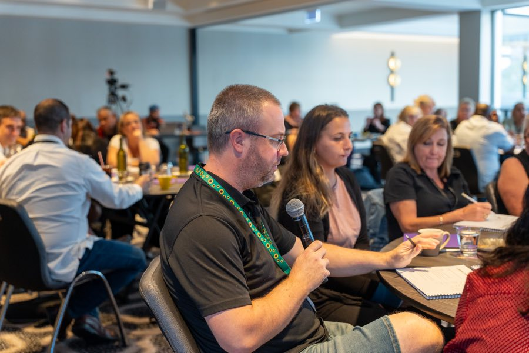
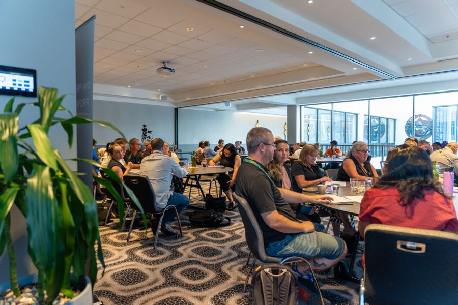

NDIS Google Ads
Reach people who are actively searching for your services this week.
People with intent, searching right now
Google Ads puts your provider in front of families and coordinators at the exact moment they are searching. "NDIS SIL vacancy Western Sydney." "Support coordination near me." "NDIS provider for autism support." These are people looking for a provider right now.
I build and manage Google Ads campaigns specifically for NDIS providers. That means targeting the right searches, in the right suburbs, with landing pages built to convert a click into a phone call or form fill.
What I actually build
Your ads show up for the searches that lead to enquiries
I only target searches with real intent behind them. "SIL vacancy Penrith" is someone looking for a specific service in a specific area. "What is NDIS" is someone researching. Both are valid searches, but only one is likely to pick up the phone.
I structure campaigns around intent tiers. The highest-intent searches, the ones closest to an enquiry, get the majority of the budget. Broader awareness terms get a smaller share, used to build familiarity rather than chase direct conversions.
Every campaign uses phrase match and exact match targeting. I do not use broad match for NDIS campaigns because it sends budget to irrelevant searches: job seekers, policy researchers, people in the wrong state.

Your budget goes where your team can actually work
If you provide services in three suburbs, your ads run in those three suburbs. Statewide or metro-wide targeting spends your budget on clicks from two hours away, which is money you will never get an enquiry from.
I set targeting at the suburb and radius level, and split campaigns by geography when the budget allows. This gives you visibility into which areas are generating enquiries and which are not, so you can make informed decisions about where to invest.

Every ad points to a page built for that search
I never send paid traffic to your homepage. Every ad group gets a dedicated landing page written for that specific search. Someone searching "SIL vacancy Parramatta" lands on a page about your SIL service in Parramatta, with a clear way to call or enquire.
The page is simple: what you offer, where you operate, why it matters, and how to get in touch. No navigation menus pulling them away. No generic "about us" copy. One page, one action.
I count phone calls and form fills
Impressions and click-through rates look good in a report. They do not tell you whether anyone actually enquired. I set up call tracking and form tracking so every enquiry is attributed to the campaign and search term that generated it.
Your monthly report shows how many enquiries came in, what they cost, and which campaigns are worth increasing. If a campaign is generating clicks but no calls, I adjust or pause it rather than letting it burn budget.
Ads work fast, but they are rented visibility
A campaign can be live within a week and generating enquiries within the first month. The trade-off: the moment you stop paying, you stop showing up.
-
Week 1 to 2
Campaign build, landing pages, tracking setup.
-
Month 1
Live and generating data, with early optimisation.
-
Month 2 to 3
Enough data to optimise targeting, bids and ad copy with confidence.
-
Month 3 and beyond
Stable performance, ongoing refinement, scaling what works.
That is why I recommend running ads alongside SEO. Ads deliver in the short term while SEO builds the organic visibility that keeps working after the ad spend stops.
What providers ask about Google Ads
How much should I spend on Google Ads?
For a local NDIS provider, $1,500 to $3,000 per month in ad spend is a reasonable starting point to test properly. Below that, you often do not get enough data to optimise. I will tell you if your budget is too low for your area and services. Management fees are separate and depend on the number of campaigns.
What is a good cost per lead for NDIS?
It varies by service type. A community access enquiry has a different value to a SIL enquiry worth $250,000 per year. As a benchmark, $50 to $150 per qualified lead is typical for NDIS Google Ads. A $96 lead is cheap if the client converts to a $200,000 annual service agreement.
Should I use Performance Max campaigns?
No. Performance Max lacks the targeting control NDIS campaigns need. It spreads budget across search, display, YouTube and Gmail with limited visibility into where the money is going. For NDIS, I use search campaigns with tight keyword groups and manual control over every element.
Can I run Google Ads myself?
You can. The risk is wasted budget. NDIS has specific negative keyword requirements, covering job searches, policy queries, competitor terms and wrong locations, and the default Google settings tend to burn through budget on irrelevant traffic. If you want to try it yourself, I can run a one-off audit of your existing campaigns and tell you what to fix.
Find out what Google Ads could deliver for your provider
The audit is free.